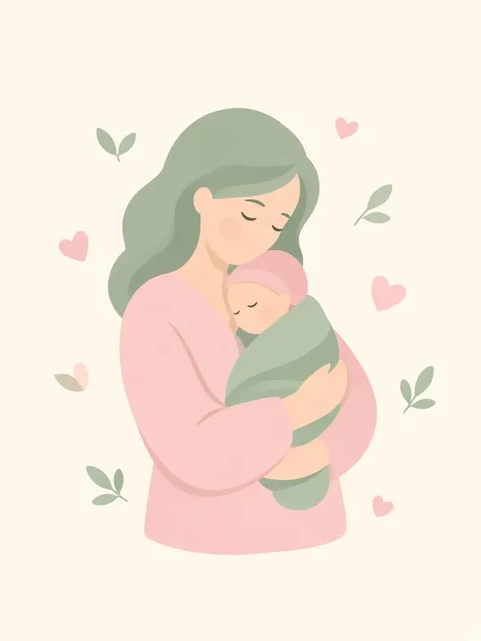
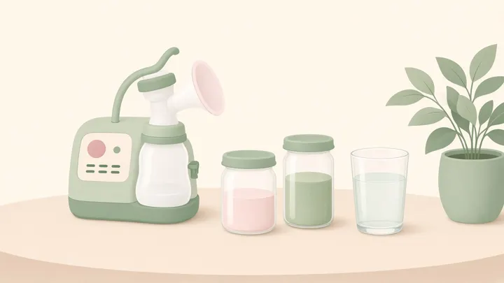

E-book digital • PDF • acesso imediato
Da primeira semana à volta ao trabalho: rotina, sinais de que está tudo bem, bombinha, sono seguro e quando procurar ajuda. Em passos simples.

Quero o guia por R$ 37Pagamento seguro pela Kiwify • Pix, cartão ou boleto • Garantia de 7 dias
Para mães e pais de primeira viagem que querem um material claro, escrito em linguagem simples, para consultar nas dúvidas do dia a dia. Tudo vem de orientações do Ministério da Saúde, da Sociedade Brasileira de Pediatria, da rBLH/Fiocruz e da OMS/UNICEF.

R$ 37 pagamento único
Por e-mail, logo após a confirmação do pagamento (Pix é imediato).
Não. É um material de apoio. Em caso de dúvida, procure sempre o pediatra ou o Banco de Leite Humano.
Sim, 7 dias pela Kiwify. Basta pedir o reembolso.
O foco é a amamentação, mas há capítulos sobre complementar e sobre voltar ao peito depois da fórmula.
Não, lê no celular. Se quiser, pode imprimir o checklist.